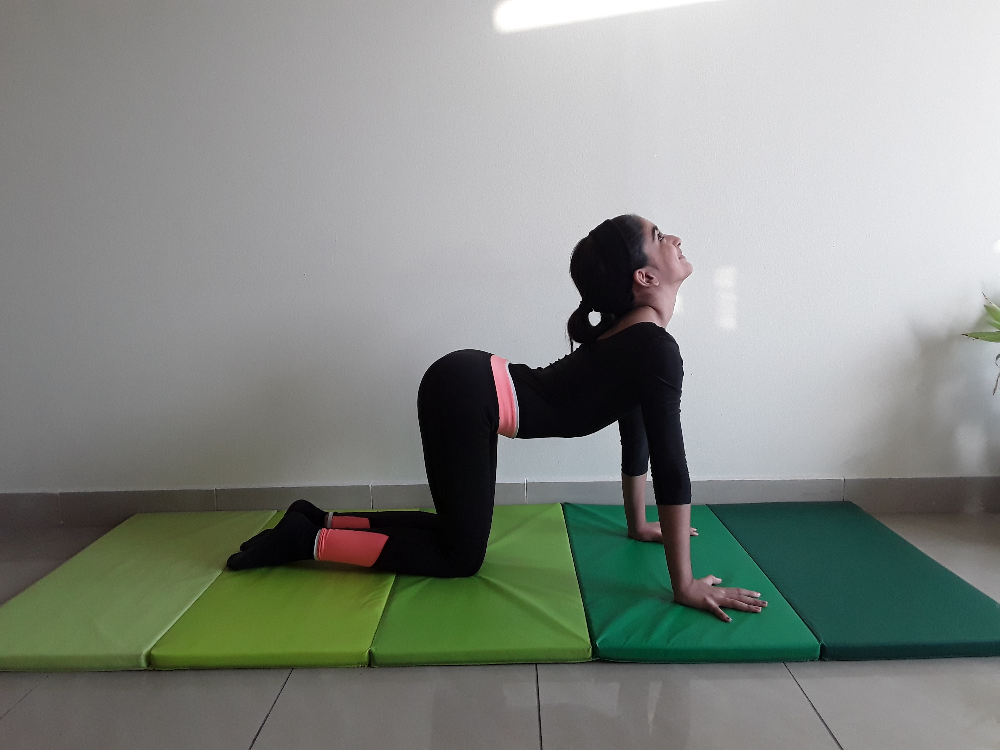

COW POSE

Steps to perform Cow Pose
- Start on your hands and knees in a “tabletop” position. Make sure your knees are set directly below your hips and your wrists, elbows and shoulders are in line and perpendicular to the floor. Center your head in a neutral position, eyes looking at the floor.
- As you inhale, lift your sitting bones and chest toward the ceiling, allowing your belly to sink toward the floor. Lift your head to look straight forward.
- Exhale, coming back to neutral “tabletop” position on your hands and knees. Repeat 10 to 20 times.
- This pose is often paired with Cat Pose on the exhale for a gentle, flowing vinyasa.